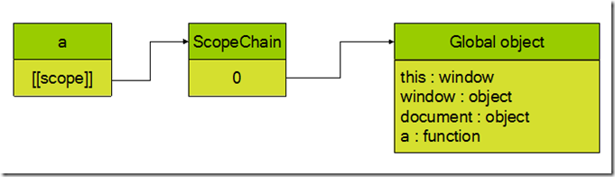
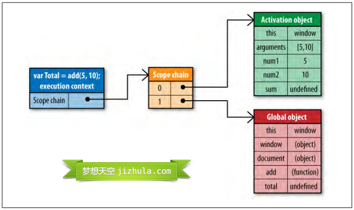

js高阶函数
高阶函数只是将函数作为参数或返回值的函数.
既然变量可以指向函数，函数的参数能接收变量，那么一个函数就可以接收另一个函数作为参数，这种函数就称之为高阶函数.
js高阶函数 = 嵌套函数【函数中(函数())】，就会涉及到了闭包，当内层函数可以访问到外层函数中声明的变量时，这就涉及到了作用域链机制。
JavaScript中所有的量（变量、常量、函数等）都是存在于某一个作用域中的
除了全局作用域, 每一个作用域都是存在於某个作用域中的
在试图访问一个变量时JS引擎会从当前作用域开始向上查找直到Global全局作用域为止！
例如
var A;//全局作用域
function B()
{
var C;//C位于B函数的作用域
function D()
{
var E;//E位于D函数的作用域
alert(A)
}
}
当alert(A)时, JS引擎沿着D的作用域, B的作用域, 全局作用域的顺序进行查找.
上面这三个作用域组成的有序集合就成为作用域链
至于为什么叫链, 你可以理解和链表有相似之处, 深层的作用域会能够访问到上层作用域, 就如同链表中两个连续节点能够单向访问一样
看代码：
function a(x, y){
var b = x + y;
return b;
}
在函数a创建时，它的作用域链中会填入一个全局对象，该全局对象包含了所有全局变量.

函数a的作用域将会在执行时用到。例如执行如下代码：
var total = a(5,10);
执行此函数时会创建一个称为“运行期上下文(execution context)”的内部对象，运行期上下文定义了函数执行时的环境。
每个运行期上下文都有自己的作用域链，用于标识符解析，当运行期上下文被创建时，而它的作用域链初始化为当前运行函数的[[Scope]]所包含的对象。
这些值按照它们出现在函数中的顺序被复制到运行期上下文的作用域链中。
它们共同组成了一个新的对象，叫“活动对象(activation object)”，该对象包含了函数的所有局部变量、命名参数、参数集合以及this，然后此对象会被推入作用域链的前端，
当运行期上下文被销毁，活动对象也随之销毁。新的作用域链如下图所示：

在函数执行过程中，没遇到一个变量，都会经历一次标识符解析过程以决定从哪里获取和存储数据。
该过程从作用域链头部，也就是从活动对象开始搜索，查找同名的标识符，
1、如果找到了就使用这个标识符对应的变量，
2、如果没找到继续搜索作用域链中的下一个对象，
3、如果搜索完所有对象都未找到，则认为该标识符未定义【找不到就报错】。
函数执行过程中，每个标识符都要经历这样的搜索过程。
作用域链和代码优化:
从作用域链的结构可以看出，在运行期上下文的作用域链中，标识符所在的位置越深，读写速度就会越慢。
因为,全局变量总是存在于运行期上下文作用域链的最末端，因此在标识符解析的时候，查找全局变量是最慢的。
所以,在编写代码的时候应尽量少使用全局变量，尽可能使用局部变量。
一个好的经验法则是：如果一个跨作用域的对象被引用了一次以上，则先把它存储到局部变量里再使用。例如下面的代码：
function changeColor(){
document.getElementById("btnChange").onclick = function(){
document.getElementById("targetCanvas").style.backgroundColor = "red";
};
}
这个函数引用了两次全局变量document，查找该变量必须遍历整个作用域链，直到最后在全局对象中才能找到。这段代码可以重写如下：
function changeColor(){
var doc = document; //遍历一次后，就保存起来。
doc.getElementById("btnChange").onclick = function(){
doc.getElementById("targetCanvas").style.backgroundColor = "red";
};
}
这段代码比较简单，重写后不会显示出巨大的性能提升，但是如果程序中有大量的全局变量被从反复访问，那么重写后的代码性能会有显著改善。
改变作用域链:
函数每次执行时对应的运行期上下文都是独一无二的，所以多次调用同一个函数就会导致创建多个运行期上下文，当函数执行完毕，执行上下文会被销毁。
每一个运行期上下文都和一个作用域链关联。一般情况下，在运行期上下文运行的过程中，其作用域链只会被 with 语句和 catch 语句影响。
with语句是对象的快捷应用方式，用来避免书写重复代码。例如：
function initUI(){
with(document){
var bd = body,
links = getElementsByTagName("a"),
i = 0,
len = links.length;
while(i < len){
update(links[i++]);
}
getElementById("btnInit").onclick = function(){
doSomething();
};
}
}
因此在程序中应避免使用with语句，在这个例子中，只要简单的把document存储在一个局部变量中就可以提升性能。
另外一个会改变作用域链的是try-catch语句中的catch语句。
当try代码块中发生错误时，执行过程会跳转到catch语句，然后把异常对象推入一个可变对象并置于作用域的头部。
在catch代码块内部，函数的所有局部变量将会被放在第二个作用域链对象中